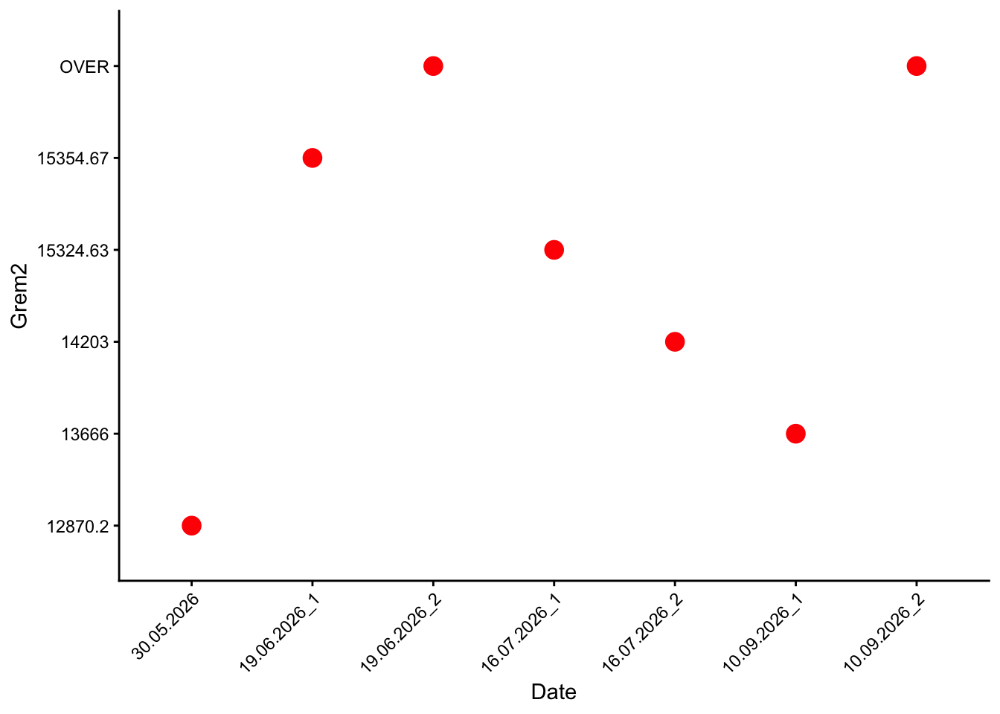
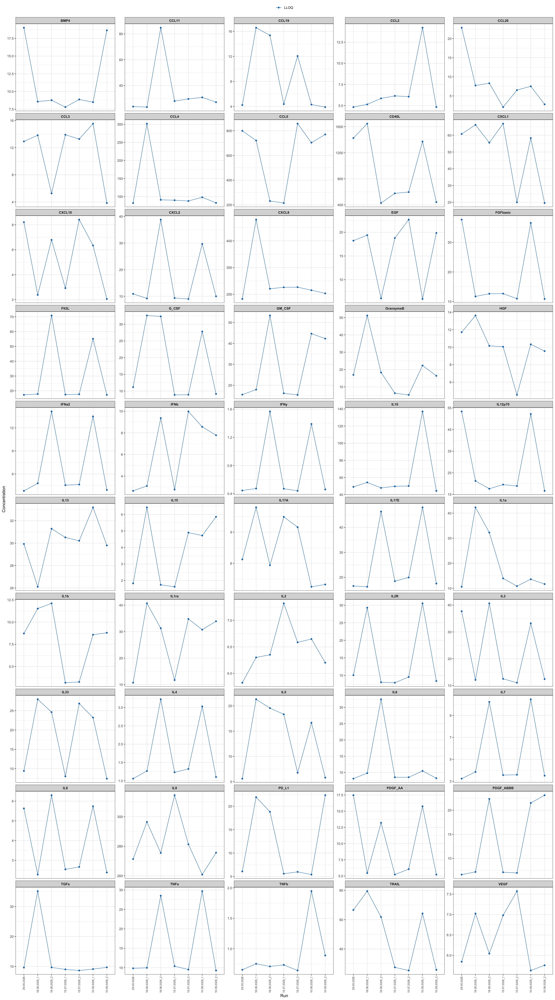

Quality Control
I. Hanka
2026-10-15
Last updated: 2026-10-15
Checks: 7 0
Knit directory: Luminex/
This reproducible R Markdown analysis was created with workflowr (version 1.7.2). The Checks tab describes the reproducibility checks that were applied when the results were created. The Past versions tab lists the development history.
Great! Since the R Markdown file has been committed to the Git repository, you know the exact version of the code that produced these results.
Great job! The global environment was empty. Objects defined in the global environment can affect the analysis in your R Markdown file in unknown ways. For reproduciblity it’s best to always run the code in an empty environment.
The command set.seed(20261015) was run prior to running
the code in the R Markdown file. Setting a seed ensures that any results
that rely on randomness, e.g. subsampling or permutations, are
reproducible.
Great job! Recording the operating system, R version, and package versions is critical for reproducibility.
Nice! There were no cached chunks for this analysis, so you can be confident that you successfully produced the results during this run.
Great job! Using relative paths to the files within your workflowr project makes it easier to run your code on other machines.
Great! You are using Git for version control. Tracking code development and connecting the code version to the results is critical for reproducibility.
The results in this page were generated with repository version e483de7. See the Past versions tab to see a history of the changes made to the R Markdown and HTML files.
Note that you need to be careful to ensure that all relevant files for
the analysis have been committed to Git prior to generating the results
(you can use wflow_publish or
wflow_git_commit). workflowr only checks the R Markdown
file, but you know if there are other scripts or data files that it
depends on. Below is the status of the Git repository when the results
were generated:
Ignored files:
Ignored: .DS_Store
Ignored: .Rhistory
Ignored: .Rproj.user/
Ignored: Quality-Control_files/
Ignored: analysis/.DS_Store
Ignored: html/
Unstaged changes:
Modified: .gitignore
Deleted: analysis/Quality Control.Rmd
Note that any generated files, e.g. HTML, png, CSS, etc., are not included in this status report because it is ok for generated content to have uncommitted changes.
These are the previous versions of the repository in which changes were
made to the R Markdown (analysis/Quality_Control.Rmd) and
HTML (docs/Quality_Control.html) files. If you’ve
configured a remote Git repository (see ?wflow_git_remote),
click on the hyperlinks in the table below to view the files as they
were in that past version.
| File | Version | Author | Date | Message |
|---|---|---|---|---|
| Rmd | e483de7 | IsabellaH1993 | 2026-10-15 | Update Pages 15.10.2026 |
rm(list = ls())basedir <- here::here ()Quality Control of high Cnt
CarTrans Healthy 05 was run as positive control with every Grem2 ELISA plate. Plotting of measured values for high control for every run:
colnames(table_Grem2) <- c("date_raw", "grem2")
table_Grem2 <- table_Grem2 %>%
mutate(
date_raw = as.character(date_raw),
# numeric-only entries = Excel serial dates
date_clean = if_else(
str_detect(date_raw, "^[0-9]+$"),
format(as.Date(as.numeric(date_raw), origin = "1899-12-30"), "%d.%m.%Y"),
date_raw
),
# split off the plate suffix (_1, _2, ...)
plate = str_extract(date_clean, "(?<=_)\\d+$"),
date = as.Date(str_remove(date_clean, "_\\d+$"), format = "%d.%m.%Y")
) %>%
arrange(date, plate)Warning: There was 1 warning in `mutate()`.
ℹ In argument: `date_clean = if_else(...)`.
Caused by warning in `as.Date()`:
! NAs introduced by coercion# Grem2 in every run high Cnt
table_Grem2 <- table_Grem2 %>%
mutate(label = factor(date_clean, levels = unique(date_clean)))
ggplot(table_Grem2, aes(x = label, y = grem2)) +
geom_point(size=4, col="red") +
labs(x = "Date", y = "Grem2") +
theme_classic() +
theme(axis.text.x = element_text(angle = 45, hjust = 1))
# Quality control Luminex analytestable_lum_overall <- table_lum_overall %>%
mutate(
Runs = as.character(Runs),
# numeric-only entries = Excel serial dates
Runs_clean = if_else(
str_detect(Runs, "^[0-9]+$"),
format(as.Date(as.numeric(Runs), origin = "1899-12-30"), "%d.%m.%Y"),
Runs
),
# split off the plate suffix (_1, _2, ...)
plate = str_extract(Runs_clean, "(?<=_)\\d+$"),
Runs = as.Date(str_remove(Runs_clean, "_\\d+$"), format = "%d.%m.%Y")
) %>%
arrange(Runs, plate)Warning: There was 1 warning in `mutate()`.
ℹ In argument: `Runs_clean = if_else(...)`.
Caused by warning in `as.Date()`:
! NAs introduced by coercionlum_long <- table_lum_overall %>%
mutate(Runs_label = factor(Runs_clean, levels = unique(Runs_clean))) %>% # keeps plates _1/_2 as separate x positions
pivot_longer(
cols = matches("_(LLOQ|ULOQ)$"),
names_to = c("analyte", "limit"),
names_pattern = "^(.*)_(LLOQ|ULOQ)$",
values_to = "value"
) %>%
mutate(
value = as.numeric(value),
limit = factor(limit, levels = c("LLOQ", "ULOQ"))
)lim_colors <- c(LLOQ = "#1f77b4", ULOQ = "#d62728")
plot_limits <- function(data, lims, log = FALSE) {
data %>%
filter(limit %in% lims) %>%
ggplot(aes(x = Runs_label, y = value, color = limit, group = limit)) +
geom_line(linewidth = 0.4) +
geom_point(size = 1.5) +
facet_wrap(~ analyte, ncol = 5, scales = "free_y") +
scale_color_manual(values = lim_colors, name = NULL) +
labs(x = "Run", y = "Concentration") +
theme_bw(base_size = 11) +
theme(axis.text.x = element_text(angle = 90, vjust = 0.5, hjust = 1, size = 7),
strip.text = element_text(face = "bold"),
legend.position = "top")
}plot_limits(lum_long, c("LLOQ", "ULOQ"))
plot_limits(lum_long, "LLOQ")
plot_limits(lum_long, "ULOQ")
sessionInfo()R version 4.6.1 (2026-06-24)
Platform: aarch64-apple-darwin23
Running under: macOS Sequoia 15.1
Matrix products: default
BLAS: /Library/Frameworks/R.framework/Versions/4.6/Resources/lib/libRblas.0.dylib
LAPACK: /Library/Frameworks/R.framework/Versions/4.6/Resources/lib/libRlapack.dylib; LAPACK version 3.12.1
locale:
[1] en_US.UTF-8/en_US.UTF-8/en_US.UTF-8/C/en_US.UTF-8/en_US.UTF-8
time zone: Europe/Zurich
tzcode source: internal
attached base packages:
[1] stats graphics grDevices utils datasets methods base
other attached packages:
[1] here_1.0.2 readxl_1.5.0.1 lubridate_1.9.5 forcats_1.0.1
[5] stringr_1.6.0 dplyr_1.2.1 purrr_1.2.2 readr_2.2.0
[9] tidyr_1.3.2 tibble_3.3.1 ggplot2_4.0.3 tidyverse_2.0.0
[13] workflowr_1.7.2
loaded via a namespace (and not attached):
[1] sass_0.4.10 generics_0.1.4 stringi_1.8.9 hms_1.1.4
[5] digest_0.6.39 magrittr_2.0.5 timechange_0.4.0 evaluate_1.0.5
[9] grid_4.6.1 RColorBrewer_1.1-3 fastmap_1.2.0 cellranger_1.1.0
[13] rprojroot_2.1.1 jsonlite_2.0.0 zip_3.0.2 processx_3.9.0
[17] whisker_0.4.1 promises_1.5.0 httr_1.4.9 scales_1.4.0
[21] jquerylib_0.1.4 cli_3.6.6 rlang_1.3.0 withr_3.0.3
[25] cachem_1.1.0 yaml_2.3.12 otel_0.2.0 tools_4.6.1
[29] tzdb_0.5.0 httpuv_1.6.17 vctrs_0.7.3 R6_2.6.1
[33] lifecycle_1.0.5 git2r_0.36.2 fs_2.1.0 pkgconfig_2.0.3
[37] callr_3.8.0 openxlsx_4.2.9 pillar_1.11.1 bslib_0.12.0
[41] later_1.4.8 gtable_0.3.6 glue_1.8.1 Rcpp_1.1.2
[45] xfun_0.61 tidyselect_1.2.1 rstudioapi_0.19.0 knitr_1.52
[49] farver_2.1.2 htmltools_0.5.9 labeling_0.4.3 rmarkdown_2.32
[53] compiler_4.6.1 getPass_0.2-4 S7_0.2.2